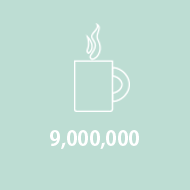

قرعه کشی مصرف کنندگان گلستان
قرعهکشی دورهای مصرفکنندگان چای گلستان
هر یک از مصرفکنندگان محصولات چای گلستان میتوانند با ارسال کد قرعه کشی روی بسته به شماره 30007405 در قرعه کشیهای دورهای سال 1403شرکت کنند. نگهداری از بستهبندی محصول برای اهدای جایزه الزامی است.

معرفی گلستان
آنچه که امروز با نام مجموعه گلستان میشناسیم در سال 1329 بنیان نهاده شد. زمانی که شرکت گلستان فعالیت خود را با بستهبندی و توزیع چای پاکتی آغاز کرد. با گذر زمان و رشد اقتصاد کشور، نهال «گلستان» به تدریج تقویت شد و شاخ و برگ گرفت. فعالیتهای «گلستان» با تهیه، تولید و بستهبندی بهترین محصولات غذایی گسترش پیدا کرد. گلستان پس از سالها تلاش همچنان میکوشد تا به کمک تجربههای اندوخته شده در این سالها کالاهایی قابل اعتماد و با کیفیت تولید نماید.
هدفمندی و برنامهریزی موثر، ایمان و عزم راسخ برای دستیابی به اهداف تعیین شده، به کار گیری همکاران مجرب و دلسوز، استفاده از روش های نوین بازاریابی و مشتری محوری از جمله عوامل مهم در استراتژی شرکت گلستان است.
محصولات گلستان
نام تجاری گلستان قدمتی به اندازه عمر شرکت گلستان دارد. گلستان ممتازترین محصولات خود را با این نام تجاری عرضه میکند. مصرفکنندگان محصولات گلستان همواره از این نام تجاری خاطره محصولاتی ممتاز و منحصر بفرد دارند و با اطمینان از نهایت کیفیت این نام تجاری حمایت میکنند.

سرمایه انسانی

مراكز فروش

محصولات گلستان

مشتریان گلستان
رکن اول غذای ایرانی
مرغوبترین برنج دنیا، برنج ایران است و بهترین نوع برنج ایرانی، طارم و هاشمی. این برنجها از بهترین شالیزارهای مازندران برداشت شده، پس از كنترل كیفیت در آزمایشگاههای تخصصی گلستان وارد چرخه بستهبندی و در وزنهای مختلف به بازار عرضه میشوند. عطر و طعم بینظیر برنج گلستان با هیچ برنج دیگری قابل مقایسه نیست. با گلستان، كیفیت زندگی بالاتر از همیشه است چرا كه مشتریان گلستان؛ لایق بهترینها هستند.
سابقهای به قدمت یک عمر
چای تنها یك نوشیدنی گرم نیست. یک گفتمان است؛ گرمابخش وجود و بهانهای برای آغاز یك معاشرت دلچسب. بیدلیل نیست كه نام «محبوبترین نوشیدنی دنیا» را با خود یدک میكشد. نوشیدنش خستگیها را فراری داده، حس خوب آرامش را به همراه دارد.
برای مردمان ایران زمین نام گلستان با چای پیوند خورده است؛ قدیمیترین محصول مجموعه گلستان، با مدرنترین و بهداشتیترین دستگاههای روز دنیا تهیه و بستهبندی میشود. چیزی كه باعث شده مشتریانش یك عمر به نام گلستان اعتماد كنند، كیفیت، عطر و طعم به یادماندنی آن است.
آجیل های خوش خنده
خواص فوقالعاده پسته بر كسی پوشیده نیست. پسته را منبع ویتامین و مواد معدنی مینامند، یك پمپ خونساز قوی و تسكین دهنده قلب و اعصاب.
پسته گلستان اما حسابش از دیگر پستههای بازار جداست. مرغوبترین پسته خام از بهترین باغهای پسته ایران دستچین میشود. پس از كنترل كیفیت در آزمایشگاه و اطمینان از سلامت محصول، با زعفران درجه یک و نمک، بوداده و برشته شده و پسته گلستان را با طعم و رنگ و عطری بینظیر به ارمغان میآورد.
مجله گلستان

ماکارونی با سبزیجات
ابتدا ماکارانیها را در ظرفی به همراه آب، روغن مایع و نمک میریزیم تا کمی بپزد. در این حین پیازها را خرد کرده و روی روغن تفت میدهیم تا طلایی شود…

سوپ مکزیکی
گوشت بوقلمون را در یک ماهیتابه بزرگ ریخته، آب روی آن بریزید تا روی آن را بپوشاند و به مدت نیم ساعت آن را بپزید. گوشت را از مایع آن بیرون آورده…

چیلاکیله
احتمالا نام چیلا کیله را نشنیده باشید ولی اگر یکبار این غذای فوقالعاده خوشمزه را تهیه کنید و نوش جان کنید جزئی جدانشدنی از فهرست
سالاد نودل
نودل هاتی کارا یك میانوعدهی مغذی، در هر موقعیتی كه باشید با كمی آب جوش و یك نودل هاتیكارا میتوانید از یك غذای سالم و خوشمزه لذت ببرید.
اینستاگرام هاتی نودل
نودلهای هاتی كارا را میتوان جایگزین سالمی برای غذاهای فستفودی دانست. طعم عالی، ارزش غذایی بالا و قیمت مناسب از این محصول غذای سالم و كاملی ساخته است.
برنج گلستان
عطر و طعم بینظیر برنج گلستان با هیچ برنج دیگری قابل مقایسه نیست. با گلستان، كیفیت زندگی بالاتر از همیشه است. چرا كه مشتریان گلستان؛ لایق بهترین ها هستند.